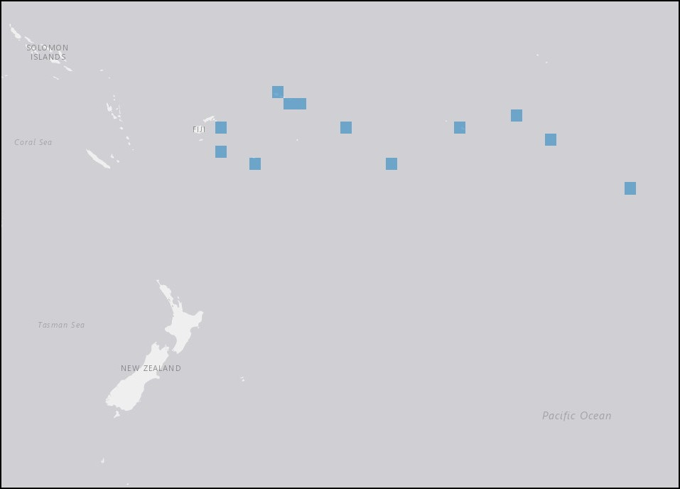

After spending Christmas on Rarotonga, Charlotte and the crew prepared for the voyage back to New Bedford in January, 1861. They would sail east from New Zealand waters through the South Pacific, a region dotted with many small islands toward Cape Horn. The fluted clam makes its home even among these remote places.

More information on the taxa and distribution of Tridacna squamosa is available through OBIS Mapper here.